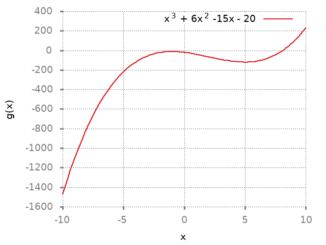

1 Concavity
1.1 Solution 1
1.1.1 Solution a
| Property | Interval |
|---|---|
| Concave up | \([r,s], [s,t], [u,v]\) |
| Concave down | \([p,q], [q,r], [t,v]\) |
| Inflection point | r,t,v |
1.1.2 Solution b
| Property | Interval/Points |
|---|---|
| Concave up | \([r,s],[s,t],[t,u],[u,v]\) |
| Concave down | \([p,q],[q,r],[v,w]\) |
| Inflection point | r,v |
1.2 Solution 2
set terminal png notransparent nointerlace rounded font "Alegreya, 14" set xlabel "x" set ylabel "f(x)" set grid set key right top plot x**3 - 3*(x**2) + 3 title "x^3 - 3x^2 + 3" ls 1

\(f(x) = x^3 - 3x^2 + 3\)
Domain: \((-\infty, \infty)\)
\(f'(x) = 3x^2 - 6x\)
There are no points where \(f\) is not differentiable but there are two points where the derivative is \(0\).
\(x=0,2\)
\(f''(x) = 6x-6\)
Notice that \(f, f', f''\) are all continous everywhere. Clearly \(f'(x) = 0\) when \(x=0,2\). \(f''(x) = 0\) when \(x=1\)
Now let's test sample points:
| Function | Value |
|---|---|
| f'(-1) | 9 > 0 |
| f'(1) | -3 < 0 |
| f'(3) | 9 > 0 |
| f''(0) | -6 < 0 |
| f''(2) | 6 > 0 |
todo
| Property | Value |
|---|---|
| \((-\infty, 0]\) | Strictly increasing, concave down |
| \([0,2]\) | Strictly decreasing, concave up and down |
| \([2,\infty)\) | Strictly increasing, concave up |
| Inflection point | 1 |
| Local maxima | 0 |
| Local minima | 2 |
1.3 Solution 3
set terminal png notransparent nointerlace rounded font "Alegreya, 14" set xlabel "x" set ylabel "g(x)" set grid set key right top plot x**3 - 6*(x**2) - 15*x - 20 title "x^3 + 6x^2 -15x - 20" ls 1

\(g(x) = x^3 + 6x^2 - 15x - 20\)
Domain: \((-\infty, \infty)\)
\(g'(x) = 3x^2 + 12x - 15\)
\(g''(x) = 6x + 12\)
Notice that \(g, g', g''\) are all continous everywhere. \(g'(x) = 0\) where \(x = -5, 1\). \(g''(x) = 0\) when \(x=-2\).
Now let's test sample points:
| Function | Value |
|---|---|
| g'(-6) | 21 > 0 |
| g'(-4) | -15 < 0 |
| g'(0) | -15 < 0 |
| g'(2) | 21 > 0 |
| g''(-3) | -6 < 0 |
| g''(-1) | 6 > 0 |
todo
| Property | Value |
|---|---|
| \((-\infty, -5]\) | Strictly increasing |
| \([-5,1]\) | Strictly decreasing |
| \([1,\infty)\) | Strictly increasing |
| Inflection point | -2 |
| Local maxima | -5 |
| Local minima | 1 |
| \((-\infty, -2]\) | Concave down |
| \([-2, \infty)\) | Concave up |
1.4 Solution 12
(defun singleDerivative (x) (let* ((num (- 3 (expt x 2))) (den (expt (+ (expt x 2) 3) 2)) (res (/ num den))) res) )
singleDerivative
Now let's find the values for the single derivative:
(singleDerivative 1.0)
0.125
(singleDerivative 2.0)
-0.02040816326530612
(singleDerivative -1.0)
0.125
(singleDerivative -2.0)
-0.02040816326530612
(defun doubleDerivative (x) (let* ((num (* 2 (* x (- (expt x 2) 9)))) (den (expt (+ 3 (expt x 2)) 3)) (res (/ num den))) res ))
doubleDerivative
Now let's find the value for the double derivatives:
(doubleDerivative -1.0)
0.25
(doubleDerivative 1.0)
-0.25
(doubleDerivative 2.0)
-0.05830903790087463
(doubleDerivative -2.0)
0.05830903790087463
(doubleDerivative -4.0)
-0.008164455459979588
(doubleDerivative 4.0)
0.008164455459979588
1.5 Solution 13
(defun singleDerivative (x) (let* ((num (* 6 x)) (den (expt (+ (expt x 2) 3) 2)) (res (/ num den))) res) )
singleDerivative
(singleDerivative -1.0)
-0.375
(singleDerivative 1.0)
0.375
(defun doubleDerivative (x) (let* ((num (- 18 (* 18 (expt x 2)))) (den (expt (+ (expt x 2) 3) 3)) (res (/ num den))) res ))
doubleDerivative
(doubleDerivative 0.0)
0.6666666666666666
(doubleDerivative 2.0)
-0.15743440233236153
(doubleDerivative -2.0)
-0.15743440233236153
1.6 Solution 13
(defun singleDerivative (x) (let* ((num (+ (expt x 4) (* 9 (expt x 2)))) (den (expt (+ (expt x 2) 3) 2)) (res (/ num den))) res ))
singleDerivative
(singleDerivative -1.0)
0.625
(singleDerivative 1.0)
0.625
(defun doubleDerivative (x) (let* ((num (* 6 x (- 9 (expt x 2)))) (den (expt (+ (expt x 2) 3) 3)) (res (/ num den))) res ))
doubleDerivative
(doubleDerivative -4.0)
0.024493366379938767
(doubleDerivative -2.0)
-0.1749271137026239
(doubleDerivative -1.0)
-0.75
(doubleDerivative 1.0)
0.75
(doubleDerivative 2.0)
0.1749271137026239
(doubleDerivative 4.0)
-0.024493366379938767
1.7 Solution 14
(defun singleDerivative (x) (let* ((num (* 16 x)) (den (sqrt (+ (expt x 2) 1))) (res (/ num den)) (sol (- res (* 2 x)))) sol ))
singleDerivative
(singleDerivative -1.0)
-9.31370849898476
(singleDerivative 1.0)
9.31370849898476
(singleDerivative 6.0)
3.7823027813143
(singleDerivative 8.0)
-0.12355397258131617
(singleDerivative -6.0)
-3.7823027813143
(singleDerivative -8.0)
0.12355397258131617
(defun doubleDerivative (x) (let* ((num 16) (den (expt (+ 1 (expt x 2)) 1.5)) (res (/ num den)) (sol (- res 2))) sol ))
doubleDerivative
(doubleDerivative 0.0)
14.0
(doubleDerivative 2.0)
-0.5689164944001346
(doubleDerivative -2.0)
-0.5689164944001346
1.8 Solution 15
(defun singleDerivative (x) (let* ((num (+ 1 (* 2 (cos x))))) num ))
singleDerivative
(singleDerivative pi)
-1.0
(singleDerivative (* 2 pi))
3.0
(singleDerivative 0)
3.0
(singleDerivative (* 1.5 pi))
0.9999999999999997
(defun doubleDerivative (x) (let* ((num (* -2 (* 2 (sin x))))) num ))
doubleDerivative
(doubleDerivative pi)
-4.898587196589413e-16
(doubleDerivative 0)
-0.0
(doubleDerivative (* 1.5 pi))
4.0
(doubleDerivative (/ (* 2 pi) 3))
-3.464101615137755
(doubleDerivative (/ (* 4 pi) 3))
3.4641016151377535
1.9 Solution 16
(defun doubleDerivative (x) (let* ((num (- 2 (* 4 (sin x))))) num ))
doubleDerivative
(doubleDerivative 0.0)
2.0
(doubleDerivative (/ pi 2.0))
-2.0
(doubleDerivative pi)
1.9999999999999996